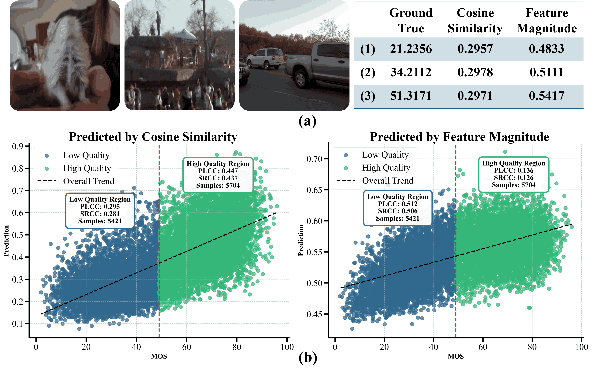
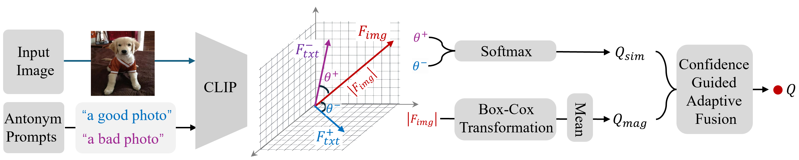
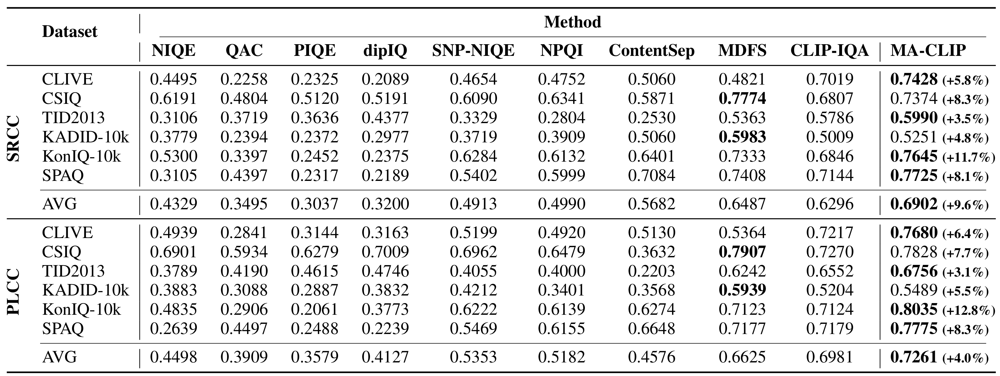
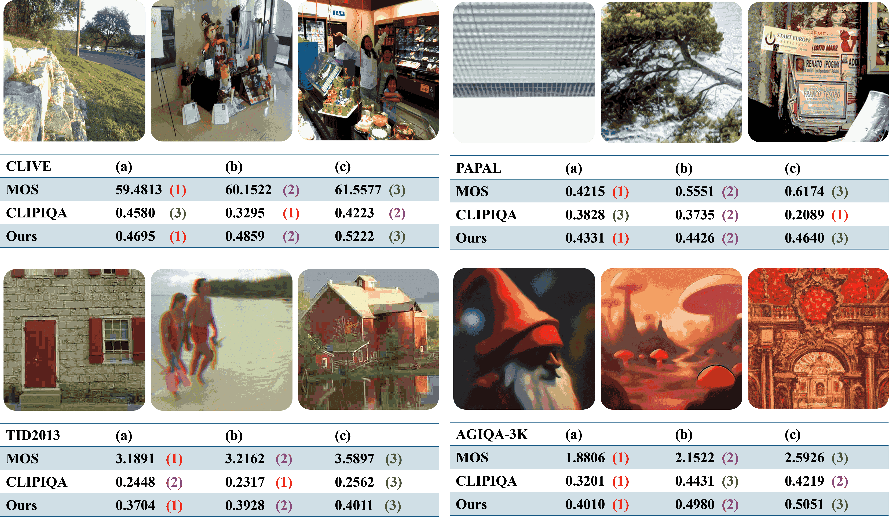
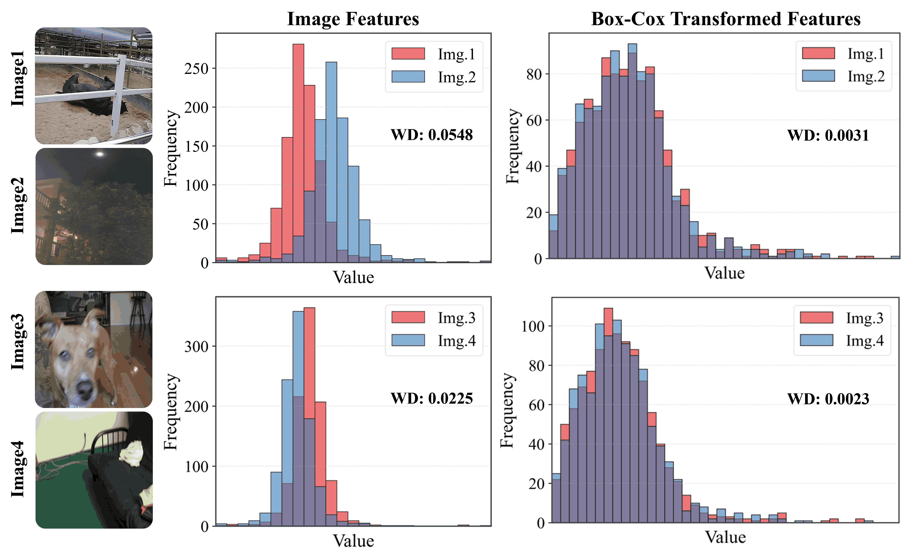
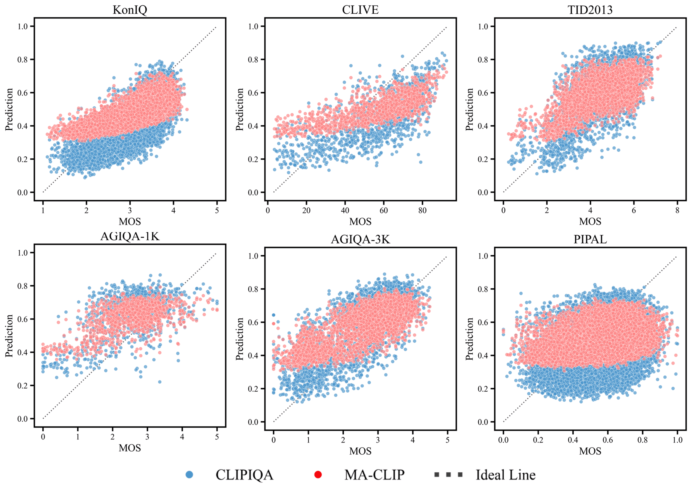

Recent efforts have repurposed the Contrastive Language-Image Pre-training (CLIP) model for No-Reference Image Quality Assessment (NR-IQA) by measuring the cosine similarity between the image embedding and textual prompts such as ``a good photo” or ``a bad photo.” However, this semantic similarity overlooks a critical yet underexplored cue: the magnitude of the CLIP image features, which we empirically find to exhibit a strong correlation with perceptual quality. As illustrated in Fig.1(a), images with widely varying MOS often yield nearly identical prompt-based similarities, failing to capture true perceptual differences. In contrast, the feature magnitude varies consistently with MOS, increasing for higher-quality images and decreasing for lower-quality ones. Moreover, we observe that cosine-based scores are more reliable in distinguishing high-quality images, where semantic features remain well aligned with CLIP’s pretrained distribution, while magnitude cues are more sensitive and consistent in low-quality regimes, where distortions cause semantic misalignment (see Fig.1(b)). T his insight suggests a key conclusion: cosine similarity and feature magnitude are complementary.
Motivated by this, we propose to leverage both cues jointly rather than relying on either alone. In this work, we introduce a novel adaptive fusion framework that complements cosine similarity with a magnitude-aware quality cue. Specifically, we first extract the absolute CLIP image features and apply a Box-Cox transformation to statistically normalize the feature distribution and mitigate semantic sensitivity. The resulting scalar summary serves as a semantically-normalized auxiliary cue that complements cosine-based prompt matching. To integrate both cues effectively, we further design a confidence-guided fusion scheme that adaptively weighs each term according to its relative strength. Extensive experiments on multiple benchmark IQA datasets demonstrate that our method consistently outperforms standard CLIP-based IQA and state-of-the-art baselines, without any task-specific training.

Overview of the Proposed Magnitude-Aware CLIP IQA Framework. Given an input image, we extract its CLIP image embedding and compute two quality signals: (1) \(Q_{\text{sim}}\), the image semantic similarity with text prompts, and (2) \(Q_{\text{mag}}\), a magnitude-based score obtained via Box-Cox transformation for statistical normalization. To adaptively balance these complementary cues, we compute a confidence discrepancy and generate softmax-based fusion weights, producing the final quality prediction \(Q\).


(left) Semantic Bias exists in CLIP feature. This feature magnitudes for visually similar-quality images differ substantially across semantic categories. Statistical normalization is necessary to make magnitude cues reliable. WD represents the Wasserstein Distance between two Feature distribution. (left) and the result generated by our method (right).
(right) Scatter plot comparison of CLIP-IQA and MA-CLIP. The x-axis represents the MOS, while the y-axis shows the prediction. As the scatter gets closer to the ideal line, it indicates that the model predicts better.


@misc{liao2025beyond,
Author = {Liao, Zhicheng and Wu, Dongxu and Shi, Zhenshan and Mai, Sijie and Zhu, Hanwei and Zhu, Lingyu and Jiang, Yuncheng and Chen, Baoliang},
Title = {Beyond Cosine Similarity: Magnitude-Aware CLIP for No-Reference Image Quality Assessment},
year ={2025},
eprint ={2407.14900},
archivePrefix={arXiv},
primaryClass={cs.CV},
}